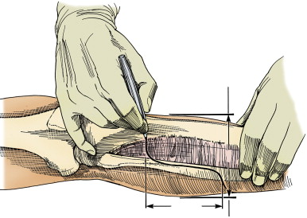
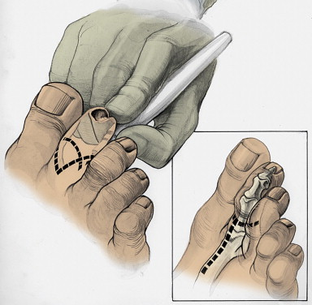
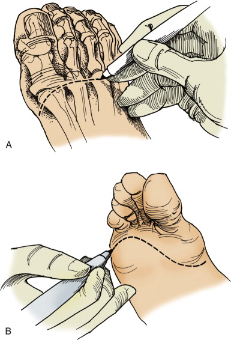

In an
appropriately consented, investigated and prepared patient.
Mark the limb
to be amputated. Check this with the patient, all available
radiology, nursing staff and relatives.
· GA / spinal
anaesthesia. IV abx including penicillin if gangrene is present.
· Prep & drape
— Leg free
draped and supported un upturned bowl.
— Foot wrapped
with a sterile stockingette to exclude any gangraneous tissue.
· I use Burgess long
posterior flap. I mark incisions:
— Level of bone
division is 8cm per meter of height (12cm for average adult)
below tibial tuberosity (TT). The absolute minimum is 6cm.
— The anterior skin
incision is 2cm distal to the tibial transection level and
encompasses 2/3 of the circumference of the limb.
— The posterior flap
is marked to be made at a distance distal to the anterior
incision which is equal to the transverse diameter of the leg.
The two levels are joined with a vertical line.

· I incise the
anterior skin flap only with 15 blade
· I ligate the great saphenous vein
with 2/0 Vicryl ties in the superficial fat
· I incise the deep
fascia of the anterior compartment and divide the muscles with
diathermy.
· Lateral to tibia I
divide the tibialis anterior, extensor digitorum longus and
extensor hallucis longus.
· I divide the
anterior intermuscular septum to expose the lateral compartment
and the peroneus longus muscle.
· This exposes the
interosseous membrane where the anterior tibial artery, which is
ligated with 0 Vicryl ties.
· I follow the deep
peroneal nerve to its birfurcation by dividing peroneus longus
and finding the common peroneal nerve, which I retract with an
artery and divide short with scissors
· I then raise the
periosteum of the tibia circumferentially with an elevator about
1cm proximal to the level of tibial transection.
· I pass a Gigli saw
behind the tibia and cut the posterior half of the bone and then
bevel the anterior half at a 45 degree angle.
·I free the
remaining soft tissues from the fibula, taking care to protect
the peroneal artery and I cut the fibula 2cm shorter than the
tibia with bone cutters.
· I then use a rasp
to round off the edges of the tibia and fibula.
· I divide the
muscles of the deep posterior compartment of the calf and divide
at the same level as the tibia
· I identify the
posterior tibial vessels and posterior tibial nerve. I suture
ligate with 0 Vicryl the vessels and retract the nerve with
forceps and cut it short with scissors.
· I then ligate the
peroneal vessels as they emerge from behind the fibula
· Fashion the
posterior flap by transecting the soleus muscle and other soft
tissue remaining at the level of the distal skin incision,
ligating the short sapenous vein to complete the amputation.
· I hand off the leg
· I open the
avascular plane between gastronemius and soleus and remove
soleus up to the level of the tibia as it contributes no blood
supply to the flap.
· Secure haemostasis.
I irrigate the stump with water and use bone wax if there is any
bleeding from tibial marrow cavity.
· Trim flap as
necessary to avoid dog ear formation
· I place a
subfascial 10F redivac drain which is not sutured so that it can
be removed without removing the dressing
· Suture
gastrocnemius fascia to fascia overlying tibialis anterior,
pretibial fascia and extensor muscles using 1 vicryl matress
suture.
· 3/0 interrupted
nylon to skin
· Opsite dressing
· Softban &
bandage
· Infuse 0.5% marcain
5ml/4hrs, leave drain off suction 15minutes
· Leave dressings
72hrs
· I request early
mobilization with hip and knee physiotherapy.
Sutures are
removed no earlier than 14 days
As soon as the
wound has healed a temporary pylon is fitted.
What are the contraindications to BKA
Severe OA of knee
Contractures and ankylosis of hip and knee
Hemiparesis of limb
Flaps infected or non-viable
Sensory neuropathy of flaps
What do you do if the tissues do not bleed when
cut
Move to a higher level. If there is no bleeding at
the highest level compatible with BKA (about 6cm from tibial
tuberosity) do not revise to AKA unless discussed with patient
beforehand. They are likely to need revision to AKA.
AKA
In an
appropriately consented, investigated and prepared patient.
Mark the limb
to be amputated. Check this with the patient, all available
radiology, nursing staff and relatives.
· GA. Supine sandbag
beneath buttock. IV abx including penicillin if gangrene is
present.
· Prep & drape
— Leg free
draped and supported un upturned bowl.
— Foot wrapped
with a sterile stockingette to exclude any gangraneous tissue.
· The optimal length
of tibial transection is 25cm from the greater trochanter;
minimum is 15cm from greater trochanter; minimum is 15 cm from
medial line of knee joint.
I then fashion
skin flaps about 10cm distal to level of bone transection.
· My posterior flap
is slightly longer than my anterior flap by about 2cm to bring
the suture line off the bed.
I use knife
dissection with a 15 blade avoiding diathermy.
· I incise the skin
and superficial fascia. I ligate the LSV with 2/0 Vicryl ties. I
continue the incision down to deep fasisa.
· I divide the
quadriceps muscles anteriorly (rectus femoris, vastus lateralis,
vastus intermedius and as I approach vastus medialis I remain
superficial to identify the sartorius muscle.
· I identify femoral
vessels and the
saphenous nerve beneath sartorious and suture ligate them with 0
vicryl siture tie individually.
· I continue dividing
the muscles laterally and medially until the periosteum is
reached.
· The termination of
profunda femoris vessels may be encountered on the femeur
between adductor magnus and vastus medialis.
· I ligate if
necessary & divide profunda vessels
When
sufficient muscle has been divided I strip the periosteum
circumferentially from the femeur with a periosteal elevator.
· I divide the femeur
with a Gigli saw
· I then use a rasp
to smooth the cut area of the bone and apply bone wax if there
is any bleeding from the marrow cavity
· I then continue to
divide the muscles medially and posteriorly looking for the
sciatic nerve between biceps femoris and semitendinosus. This
nerve has a large vasonervorum which is stripped from the vessel
and ligated with 2/0 Vicryl ties and divided.
· I pull the sciatic
nerve down, ligate & let retract
· I then complete division of the
posterior muscles
· I hand off the limb
· I irrigate the
wound with warm saline and secure haemostais with careful
diathermy of bleeding points and pressure.
· I place a 10F
redivac drain below the fascia and I suture the deep fascia of
the anterior and posterior compartments in multiple layers with
0 vicryl to reduce dead space and prevent bone herniation.
· The drain is not
sutured
· I trim the flaps to
ensure that there is no necrotic skin or dog ears
· I Suture the skin
with interrupted 3/0 Nylon
· Opsite dressing
· Softban &
bandage
· Infuse 0.5% marcain
5ml/4hrs, leave drain off suction 15minutes
Alternatively
an epidural catheter can be placed inside the epineurium of the
sciatic nerve for continious LA infusion.
· Leave dressings
72hrs
· I request early
mobilization with hip physiotherapy.
·Sutures are removed
no earlier than 14 days
·As soon as the
wound has healed a temporary pylon is fitted.
Foot amputations
There are four groups of procedure:
Digit and ray amputation
Transmetatarsal amputation
Midfoot amputation (Lisfranc)
Through ankle amputation (Syme)
In general only successful in diabetic gangrene
or the limb has been revascularized in a non-diabetic.
Digit amputations
ie toe
In an
appropriately consented, investigated and prepared patient.
Mark the toe
to be amputated. Check this with the patient, all available
radiology, nursing staff and relatives.
· GA. IV abx
including penicillin if gangrene is present.
· Prep & drape
leaving the foot free.
· I separate the toes
using ribbon gauze and asking my assistant to pull the toes to
be preserved away from that which is to be amputated.
· I mark a racket
incision (inset one below) at the level of the level of the
proximal phalanx.

· I use a 15 blade
and incise down to the bone of the proximal phalanx
· I divide the bone
just distal to the capsule of the MTP joint so as to avoid
damaging the transverse metatarsal ligament.
· I divide the
proximal phalanx with bone cutters and round the edges with a
rasp
· I obtain
haemostasis, wash out the wound and close the skin with
interrupted 3/0 Nylon.
· Softban &
bandage
· Leave dressings
72hrs
· I request early
mobilization with hip, knee and ankle physiotherapy to prevent
contractures.
·Sutures are removed
no earlier than 14 days
Ray amputation
ie complete
resection of phalanx and partial resection of corresponding
metatarsal
-indicated when there isn't enough viable tissue to cover for
disarticulation of the simple digit amputation
- racquiet like incision extended to dorsal foot,
resection under tension then closure
In an
appropriately consented, investigated and prepared patient.
Mark the toe
to be amputated. Check this with the patient, all available
radiology, nursing staff and relatives.
· GA. IV abx
including penicillin if gangrene is present.
· Prep & drape
leaving the foot free.
· I separate the toes
using ribbon gauze and asking my assistant to pull the toes to
be preserved away from that which is to be amputated.
· I mark the skin
incision on the plantar surface at the metatarso-phalyngeal skin
crease and on dorsum of foot I mark a racket-shaped incision
coverging at the level of the metatarsal heads. The plantar and
dorsal incisions are joined by a parabolic line
· I make the incision
with a 15 blade down to the level of bone beginning on the
dorsum.
· I spare the
digital arteries on both sides of the amputated digit
· I use a periosteal
elevator to elevate the periosteum and soft tissues from the
metatarsal head.
· I divide the
metatarsal in the mid-shaft with bone cutters and smooth it with
a rasp
· I then extend the
toe and transect the plantar tendons so that they retract and
divide the remaining soft tissue posteriorly flush with the bone
· I wash out the
wound with saline and trim the flaps to avoid dog ears and
suture the skin flaps only with interrupted 3/0 Nylon over a
penrose drain.
· Softban &
bandage
· Leave dressings
72hrs
· I request early
mobilization with hip, knee and ankle physiotherapy to prevent
contractures.
·Sutures are removed
no earlier than 14 days
· If the open
technique is chosen, I divide the skin at the same level and
leave the tissue to granulate, cutting the metatarsal shaft
shorter so that it is covered by viable muscle.
· A split skin graft
can be placed later to aid healing once sepsis has subsided.
Transmetatarsal amputation
In an
appropriately consented, investigated and prepared patient.
Mark the fot
to be amputated. Check this with the patient, all available
radiology, nursing staff and relatives.
· GA. IV abx
including penicillin if gangrene is present.
· Prep & drape
leaving the foot free.
· I mark the skin
incision on the plantar surface at the metatarso-phalyngeal skin
crease and on dorsum of foot an incision at the level of the
metatarsal heads. The plantar and dorsal incisions are joined by
a parabolic line

- ie plantar flap slightly longer, tendons
resected under tension to proximal edge of wound
· I make the incision
with a 15 blade down to the level of bone beginning on the
dorsum.
· I ligate with 2/0
Vicryl ties the digital arteries
· I use a periosteal
elevator to elevate the periosteum and soft tissues from the
metatarsal heads.
· I divide the
metatarsals with a bone cutter or saw and round the edges with a
rasp.
· I then extend the
toes and transect the plantar tendons so that they retract and
remaining soft tissue posteriorly flush with the bone
· I wash out the
wound with saline and trim the flaps to avoid dog ears and
suture the skin flaps only with interrupted 3/0 Nylon over a
penrose drain.
· Opsite dressing
· Softban &
bandage
· Leave dressings
72hrs
· I request early
mobilization with hip, knee and ankle physiotherapy to prevent
contractures.
·Sutures are removed
no earlier than 14 days
Partial transmetatarsal amputation
In an
appropriately consented, investigated and prepared patient.
Mark the fot
to be amputated. Check this with the patient, all available
radiology, nursing staff and relatives.
· GA. IV abx
including penicillin if gangrene is present.
· Prep & drape leaving the foot free.
Can be
performed as a closed or open procedure – open is chosen if
there is any question as to viability of skin or residual sepsis
· With the closed
technique, I mark the skin
incision on the plantar surface at the metatarso-phalyngeal skin
crease to remove the lateral 2-3 digits and on dorsum of foot an
incision at the level of the metatarsal heads. The plantar and
dorsal incisions are joined laterally by a parabolic line and
longitudinal line between the toes to be removed and those that
will be preserved.
· I incise the skin
and soft tissue down to bone preserving the digital artery on
the toe which will not be amputated.
· I tie the other
digital arteries with 2/0 Vicryl ties
· I use a periosteal
elevator to elevate the periosteum and soft tissues from the
metatarsal heads.
· I divide the
metatarsals with a bone cutter and round the edges with a rasp.
· I then extend the
toes and transect the plantar tendons so that they retract and
remaining soft tissue posteriorly flush with the bone
· I wash out the
wound with saline and trim the flaps to avoid dog ears and
suture the skin flaps only with interrupted 3/0 Nylon over a
penrose drain.
· If the open
technique is chosen, I divide the skin at the same level and
leave the tissue to granulate, cutting the metatarsal shafts
shorter so that they are covered by viable muscle.